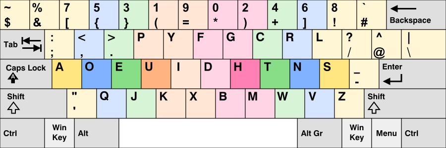

投稿日: 2021/01/20 00:33:38
カテゴリ: やまぶきＲ
サムネイル: 
さて、本当に少しずつだけ練習しているDvorak配列だけど、本格的に練習して一週間近く経ったのもあり、だいぶ慣れてきた。
とはいえまだ全然打てなくて全く実用レベルではないのだけど、英字部分についてはもう違和感がなくなってきたのもあり、本格的にProgrammer's Dvorakに切り替えていくことにした。
(配列表は http://programmer-dvorak.appspot.com/ より引用)
配列はこの通りで、通常のDvorakとの違いは記号と数字。とはいえ多分よほど上達しないかぎりプログラムは当分Qwertyで書いていくし、Vimとの相性問題もあってDvorakを実践投入するのは随分先になることが予想されるのだけど、早いうちに慣れておくのに越したことはないと感じた。
ただ英文を練習する題材に困っていて、自分思考するときに英語が頭に浮かんでくることはほとんどないので、実際こうやって文章をただたれ流しにしていても大して英文の練習にはならない。
自分Dvorakは英語でしか使わないと決めていて、日本語は新下駄配列で打つので、正直練習するタイミングが、何か検索するときにURLの最初の数文字を打つくらいしかなくて困っていた。ちなみに繰り返しになるけど仕事で書くコードは当分Qwertyで、まだDvorakで書いてみようという気はさすがに起きない。
で、せっかく家で英文の練習をするなら、やっぱコードの写経かなと思って、英字新聞の写経でもいいけどあんまり気乗りしないので、せっかくコードを練習するのであれば、通常のDvorakではなくてProgrammer's Dvorakにこのタイミングで移行しようかなと思った次第。
とはいえ、やっとさっきやまぶきRの配列書いたばかりで、Mac用のKarabinar Elementsはまだ通常のDvorakなので、最近Macでの作業率が高いことを考えるとまだ実際に使い出すのは先になりそうな気がするなぁ……。
とりあえず奇数の数字は左手、偶数は右手とだけ覚えておけば当分はなんとかなるだろう。しばらくは気長にいこう。とりあえずやまぶきR用設定ファイルだけでも書けてよかった。
多分本格的な練習を始めてから一ヶ月くらいが配列練習の踏ん張り時だと、経験的に感じるので、今がDvorakは耐え時かなと思う。でも、新下駄配列との出会いが自分と文章入力との関係を激変させるインパクトを持っていたように、普段常用するものに最大の投資をするのは大きなリターンや思考の変革をもたらしてくれると信じているので、頑張って練習していこう。